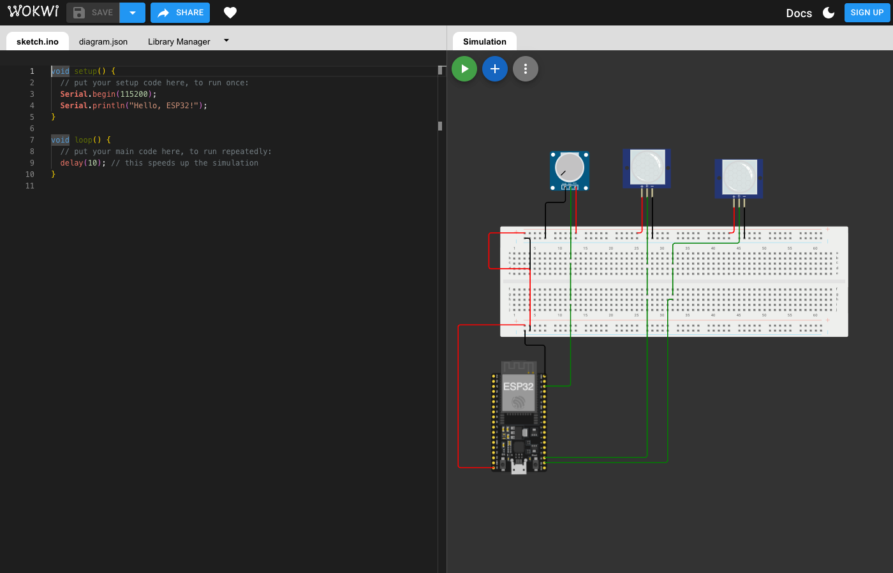
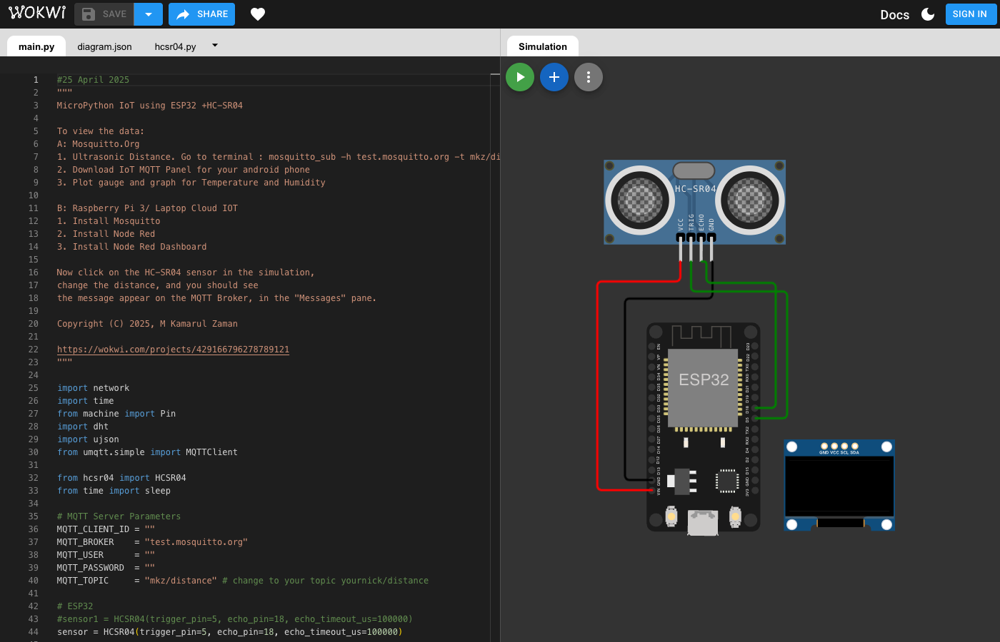
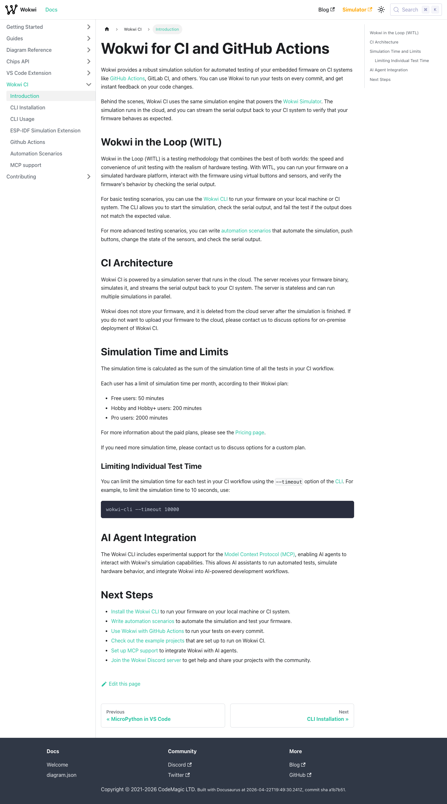

🌡️ Smart Thermostat
ESP32demo/smart-thermostat
DHT22 temperature sensor drives an alarm LED when threshold exceeded. Demonstrates hysteresis and GPIO control.
wokwi-cli . --scenario scenarios/demo.yamlAutomated, scriptable microcontroller simulations with real sensor emulation. Built with isolated git worktrees, TDD scenarios, and CI-ready artifacts.
ESP32demo/smart-thermostat
DHT22 temperature sensor drives an alarm LED when threshold exceeded. Demonstrates hysteresis and GPIO control.
wokwi-cli . --scenario scenarios/demo.yamlESP32demo/motion-alarm
MPU6050 IMU detects shake events. Triggers buzzer + LED alarm with I2C communication.
wokwi-cli . --scenario scenarios/demo.yamlArduino Unodemo/auto-blinds
Photoresistor measures ambient light. Servo opens/closes blinds based on lux thresholds.
wokwi-cli . --scenario scenarios/demo.yamlRP2040 Picodemo/weather-station
DHT22 + TM1637 7-segment display cycles temperature and humidity readings.
wokwi-cli . --scenario scenarios/demo.yamlESP32-S3demo/touch-ui
ILI9341 display with touch buttons controls RGB LED color. Serial fallback for automated testing.
wokwi-cli . --scenario scenarios/demo.yamlScreenshots captured from live Wokwi simulations using Puppeteer MCP.

ESP32 DevKit running in Wokwi browser simulator

ESP32 with HC-SR04 ultrasonic sensor and MQTT IoT demo

Official Wokwi CLI documentation — CI-driven simulation